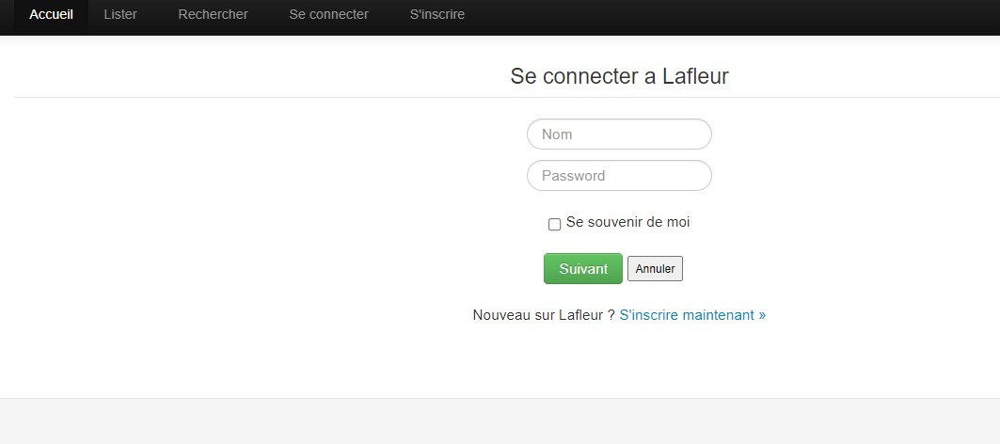
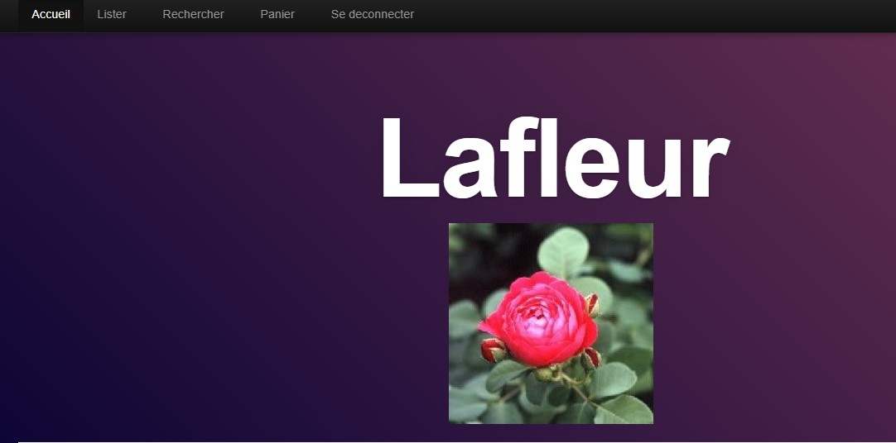

Projet Lafleur
Janvier 2021 - mars 2021
Projet MVC WEB
Presentation Du Projet
Lors de cette 2 eme année, nous avons appris à utiliser le Modele Vue Controleur pour les projets php avec notre professeur de développement Web, à travers le projet La Fleur. Il nous a demandé diverses améliorations par rapport au projet de base qu'il nous avait fourni, pour mieux maitriser cette aspect du MVC.
Ce site permet des interactions tel que lister, modifier, ajouter ou bien supprimer des fleurs ainsi qu'une liste d'utilisateurs avec différents droits. Il y a deux status : Visiteurs ou Administrateurs.
Notre professeur nous donnait à chacun différentes missions à effectuer.
Connexion
Lors de la fin du projet, nous nous sommes interessés sur l'aspect securité des fonctionalités. Nous avons décidé avec notre professeur de celles qui seront diponibles aux visiteurs et celles disponibles aux adminitrateurs. Pour se faire, nous avons rajouté un bouton de connexion qui une fois faite permettra certaines fonctionalités restreintent pour un utilisateur comme celle de la recherche de fleur et toutes les fonctionalités disponibles s'il s'agit d'un administrateur. j'ai également securisé l'accés à l'url des pages, n'étant pas disponible si le cookie de connexion n'est pas rempli ou encore empecher l'injection SQL de bas niveau.
Page de Connexion
Utilisateur
La partie du projet concernant les utlisateurs, représente divers actions que j'ai dû réaliser. Tout d'abord, pouvoir les lister en distinguant les visiteurs et les administrateurs, ajouter un utilisateur ou bien en modifier un. Toutes ces méthodes ont dû être réalisé à travers un MVC qui redirige les requêtes SQL que j'ai dû créer à la Vue designé pour l'affichage demandé, ou encore verifier si un Utilisateur existe déjà lors de sa création, mais également la possibilité de pouvoir confirmé le mot de passe pour être certain de son entrée.
Menu Administrateur

Menu Client
Les Fleurs
L'onglet concernant les fleurs permet quatre utilisations. Nous pouvons lister ou ajouter des fleurs tout comme les clients, mais nous pouvons également en supprimer ou faire une recherche en particulier. Tout cela en utilisant également le concept MVC ou les requêtes seront gérées vers une page de gestion de données avec les requêtes correspondantes qui permettront l'affichage de la fleur en particulier ou la suppression de celle demandée, tout cela en faisant des verifications d'existence.
Conclusion
Ce projet php nous a permi de prendre la main sur le concept MVC et d'en comprendre son importance, en apprenant à l'utiliser à travers les diverses mises à jour demandées par notre professeur ce qui nous permettra de mieux structurer nos projets php à l'avenir